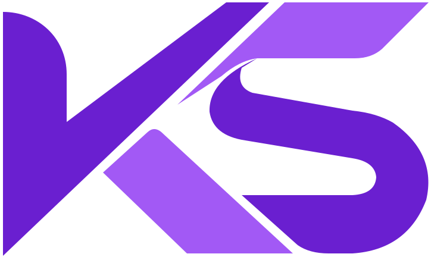
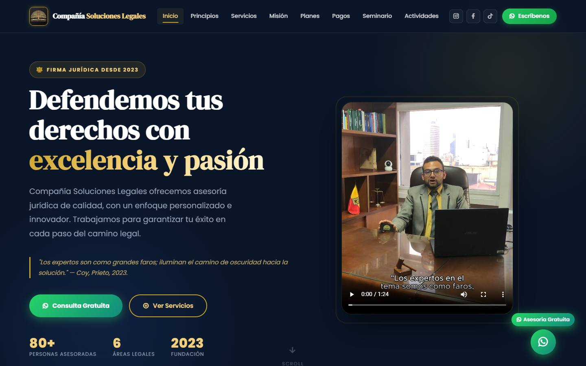
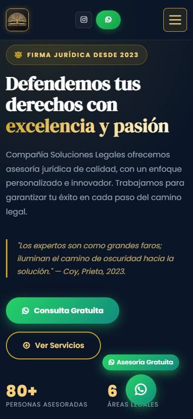
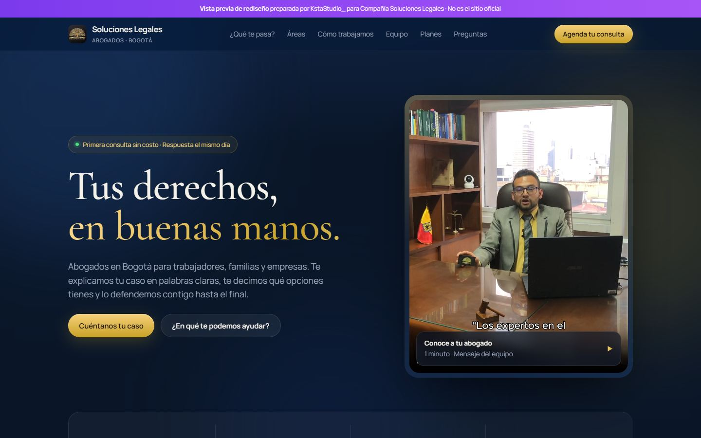
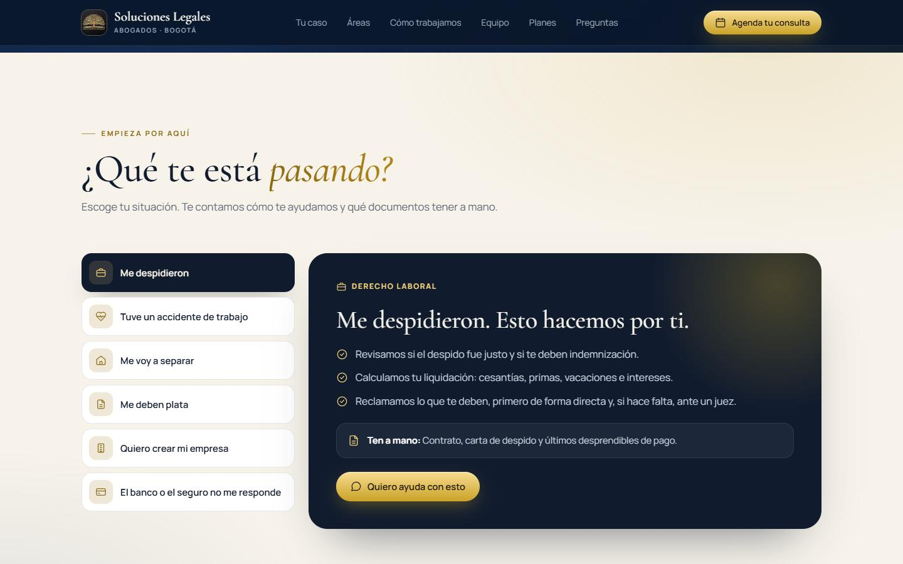

KstaStudio_Auditoría de sitio web
Revisión de companiasolucioneslegales.com: qué funciona, qué le está costando clientes a la firma y una vista previa de cómo podría verse y funcionar.
01 · Resumen
La página actual tiene buenas bases: una paleta azul y dorada elegante, un video real del abogado y la información de las nueve áreas del derecho que atiende la firma. El problema es lo que pasa cuando una persona llega buscando ayuda legal.
Hoy todo está en una sola pantalla larga y cada botón lleva a WhatsApp. No hay forma de contar el caso, saber quién es el abogado, ver opiniones de clientes, consultar un horario o encontrar la oficina en un mapa. En un servicio donde la gente decide por confianza, eso hace que muchos visitantes se vayan sin escribir.
Una reforma de la página, no un parche. Mantener lo que ya identifica a la firma (colores, logo, video) y reorganizar todo alrededor de una pregunta: "¿qué le está pasando a esta persona y cómo la ayudamos?". En las páginas 5 y 6 está la vista previa de esa nueva versión.


Página actual, en computador y en celular (capturas del 3 de noviembre de 2026).
02 · Hallazgos
"Consulta gratuita", "Habla con un abogado", "Protege tu caso" y "Escríbenos" hacen lo mismo. Propuesta: un formulario corto que organice el caso (área, qué pasó, plan de interés) y lo entregue ya escrito, además de WhatsApp como opción.
El contador marca 00:00:00 y la frase "solo para 10 personas este mes" no tiene nada que la respalde. Una oferta que parece falsa resta credibilidad justo a un despacho de abogados. Propuesta: quitarla o reemplazarla por una oferta real y con fecha.
La sección "Medios de pago" muestra tarjetas, PSE, código QR y Nequi, pero no tiene botón de pago ni el código QR. Propuesta: un enlace de pago (Wompi o Mercado Pago) o los datos claros para transferir.
No aparece el nombre, la tarjeta profesional, la universidad ni una foto del equipo. En servicios legales, eso es lo primero que revisa un cliente. Propuesta: una sección "Quién te atiende" con nombre, T.P. y foto profesional.
La página dice "80+ personas asesoradas", pero no muestra ninguna. Propuesta: 3 testimonios reales, con el permiso de cada cliente.
Dice "6 áreas legales" pero muestra 9. El pie de página dice © 2025. En Instagram aparecen "Penal" y un "10% de descuento" que no están en la página. Los precios ($350.000 y $500.000) no dicen si son por caso o por mes. Propuesta: unificar toda la información.
Solo aparecen la dirección y un número de teléfono. Propuesta: horario de atención, un correo profesional y el mapa de la oficina.
Partículas doradas, íconos genéricos de internet, tarjetas iguales con borde dorado y botones verdes de WhatsApp por todas partes. El verde de WhatsApp compite con el dorado de la marca. Propuesta: menos adornos, más espacio, una letra más fina y un solo color de acción: el dorado.
"Misión", "Visión" y "Principios" ocupan mucho espacio, y casi nadie los lee al buscar un abogado. Propuesta: hablarle al cliente de su problema ("¿Te despidieron? Esto hacemos por ti") y dejar la misión en una línea.
Las áreas están en lenguaje jurídico ("Derecho Mercantil", "Contratación Estatal"). Quien llega piensa en su situación, no en el nombre del área. Propuesta: un buscador de situaciones: "Me despidieron", "Me voy a separar", "Me deben plata"... Cada una explica qué hace la firma y qué documentos tener a mano.
¿La consulta es gratis de verdad? ¿Qué llevo? ¿Atienden fuera de Bogotá? Propuesta: preguntas frecuentes cortas.
Bien: tiene candado de seguridad (https), descripción para Google y datos para redes sociales. Falta: nombres de imágenes con espacios, íconos traídos de otras páginas (si esas páginas cambian, los íconos se rompen), enlaces de redes sin texto (difíciles para lectores de pantalla), un aviso de tratamiento de datos (Ley 1581 de 2012) y el perfil de Google Maps conectado.
03 · La nueva versión
Hicimos una vista previa funcional con los colores oficiales de la firma. Se puede abrir en el celular o en el computador y probarla:
https://ksta.jc-casta00.workers.dev/propuestas/soluciones-legales/


| Antes | En la nueva versión |
|---|---|
| Todos los botones llevan a WhatsApp | Formulario que organiza el caso (área, plan y qué pasó) y lo entrega por WhatsApp ya escrito, con casilla de tratamiento de datos |
| Áreas en lenguaje jurídico | "¿Qué te está pasando?": 6 situaciones comunes, qué hace la firma en cada una y qué documentos tener a mano |
| No se sabe quién atiende | Sección "Quién te atiende", con nombre, tarjeta profesional, formación y foto |
| Sin testimonios | Espacio para 3 testimonios reales de clientes |
| Precios sin contexto | Planes en COP, aclarando si son por caso, con métodos de pago |
| Sin horario ni mapa | Horario, mapa de la oficina, teléfono y preguntas frecuentes |
| Oferta con contador en cero | Se elimina. La primera consulta gratis se presenta como lo que es: una orientación inicial |
Los textos entre corchetes de la vista previa (nombre del abogado, T.P., universidad, horario y testimonios) se llenan con los datos reales de la firma.
04 · Cómo lo haríamos
| Etapa | Qué pasa | Tiempo |
|---|---|---|
| 1. Reunión | Revisamos juntos la vista previa y recogemos los datos reales: abogados, fotos, horario, testimonios y precios. | 1 día |
| 2. Contenido | Ajustamos los textos de cada área y de las situaciones más comunes de sus clientes. | 3 días |
| 3. Desarrollo | Construimos la página completa, rápida y adaptada al celular, con formulario, mapa y aviso de privacidad. | 7 a 10 días |
| 4. Google | Conectamos el perfil de Google Maps y preparamos la página para búsquedas como "abogado laboral en Bogotá". | 2 días |
| 5. Entrega | Publicación en su dominio actual, una capacitación corta y acompañamiento. | 1 día |
El dominio companiasolucioneslegales.com se conserva: los clientes y Google no pierden la dirección.
La inversión se presenta en una cotización aparte, según lo que la firma decida incluir.
¿Hablamos 20 minutos esta semana?
Le mostramos la vista previa en vivo y resolvemos sus dudas. Sin compromiso.
WhatsApp +57 311 639 0334 · kstastudio@gmail.com · Instagram @kstastudio_ · ksta.jc-casta00.workers.dev